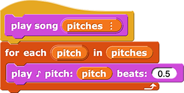
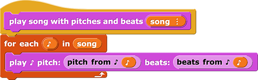
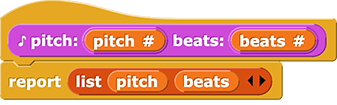
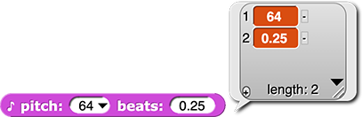
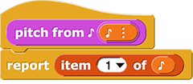
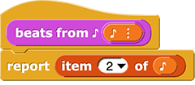

Page 8: Songs with Pitches and Beats
Lab 5, Page 8
Consider that students don’t always have to download a new XML; they could just import blocks into existing projects. –MF
In this activity, you will learn to store and play songs with both pitch and length of each note.
So far, you’ve been using a play song block that only lets you control the pitch of each note (by giving it a list of pitches as input). The number of beats was the same based on whatever you typed into the play ♪ block inside your play song block (for example, 0.5 in the image below).

You can use a table to store the data for every note and then use play song with pitches and beats, which expects music data in a table, to play the song. Each item in the list below is a new block:  beats: ()") . It looks like the
. It looks like the play ♪ command, but it’s a reporter that reports the pitch and beat.
') to (list (♪ pitch: (76) beats: (0.25)) (♪ pitch: (76) beats: (0.25)) (♪ pitch: (0) beats: (0.25)) (♪ pitch: (76) beats: (0.25)) (♪ pitch: (0) beats: (0.25)) (♪ pitch: (72) beats: (0.25)) (♪ pitch: (76) beats: (0.25)) (♪ pitch: (0) beats: (0.25)) (♪ pitch: (79) beats: (0.25)) (♪ pitch: (0) beats: (0.75)) (♪ pitch: (67) beats: (0.25)))")
' variable showing a table with two columns and eleven rows. The rows contain the value pairs: (76, 0.25), (76, 0.25), (0, 0.25), (76, 0.25), (0, 0.25), (72, 0.25), (76, 0.25), (0, 0.25), (79, 0.25), (0, 0.75), (67, 0.25)")
The introduction of an ADT that’s used throughout this activity can’t be inside a hint inside a yellow “optional” box! Also, they’ve seen abstract data types before, no? If so, there should be a reference back to their introduction. If this is their introduction, it needs much more explicit calling out as a Big Idea. –bh 3/3/22
We’ve agreed not to teach ADTs at all in this course. We are only using them here (with the option to learn more). You can reopen this decision if you like, of course, but that has been the agreement so far. –MF, 3/6/22
How does the play song with pitches and beats block work?
This block takes a table of pitch and beat values as input, and for each note in the song, it plays the pitch and beat values for that note:

Which part is the song and which part is the ♪?
' variable showing a table with two columns and eleven rows. The entire table is labeled 'song' and a single row is labeled '♪'. An animation cycles through the rows showing each row labeled '♪' one after another.")
The data about each note is loaded in to a table using the ♪ pitch beats block, which takes a pitch and number of beats as input and reports a list with those two values:
 
How is the data loaded into a table with the ♪ pitch beats block?
Each note (♪) in the song now has both pitch and beat information, and play ♪ needs to receive those data in separate input slots. The and blocks each take a note (♪) as input and report only one piece of information to the play ♪ block.
 
So, play song with pitches and beats takes a table of song data with pitches and beats as input (song), and it plays each note (♪) at the specified pitch for the specified number of beats.
MARY TODO: I need to do add this block to the previous XML projects and give it help text. When I do, I should take it from the MARIO MAPPED EXMAPLE because that version has the help text as a comment on the hat block. –MF, 2/27/22
MARY TODO: The original ‘Mary Had a Little Lamb’ (MHALL) XML has no extra sound blocks hidden in it. And both the map MHALL and map TWINKLE don’t either and also they might need help text on the play song block. Also I reminded students how to put help text on a block in 2.1.5#6, but perhaps we should on page 2.1.3 between #4 and #5 also… –MF, 2/27/22
- Open this Song Player - Pitches and Beats project, and save it to your account.
-
You learned how to create a global variable in Lab 5 Page 6: Storing Songs.
Create a new global variable to store a song with both pitch and beat information.
-
Use the reporter to input each note in your list.
-
Play your song by dragging your new variable (with both pitch and beat data) into the input slot of the
play song with pitches and beatsblock and clicking it. - Fix any problems with your project.
-

-
Build another song with pitch and beat information, store it in another global variable, and play that using the
play song with pitches and beatsblock also.
In this activity, you learned how to create a table of song data containing both pitch and length data.